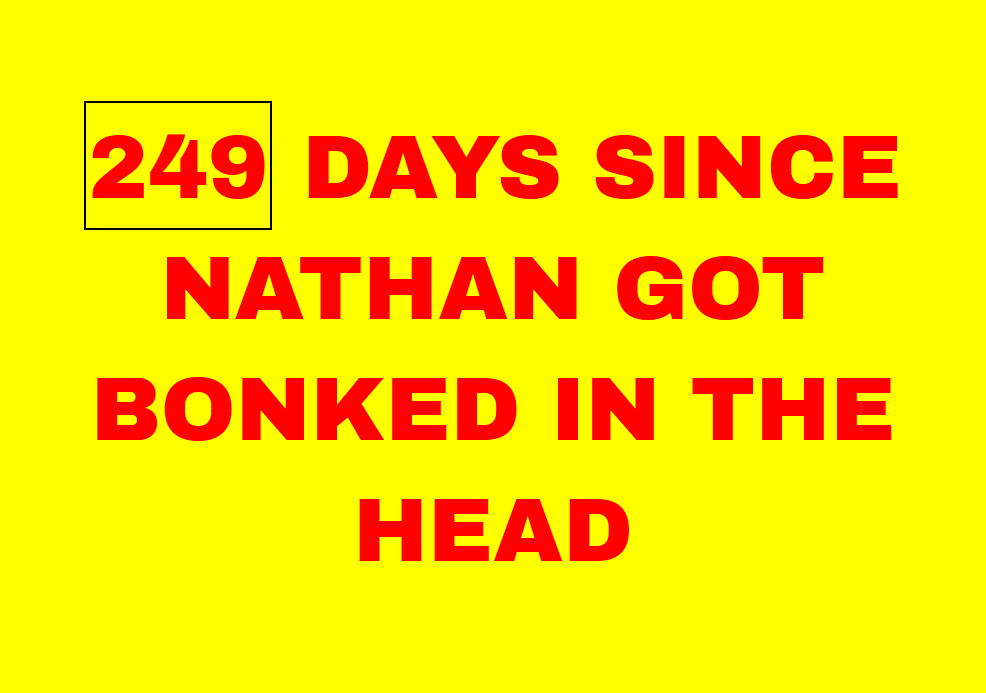

This is a website where you can keep tabs on when I was last cold-clocked in the noggin. An adaptation of work-safety signs, this clever doohickey will keep you on the cutting edge of the ol' domes status with up to date information on when the last time my precious egg straight beefed it.